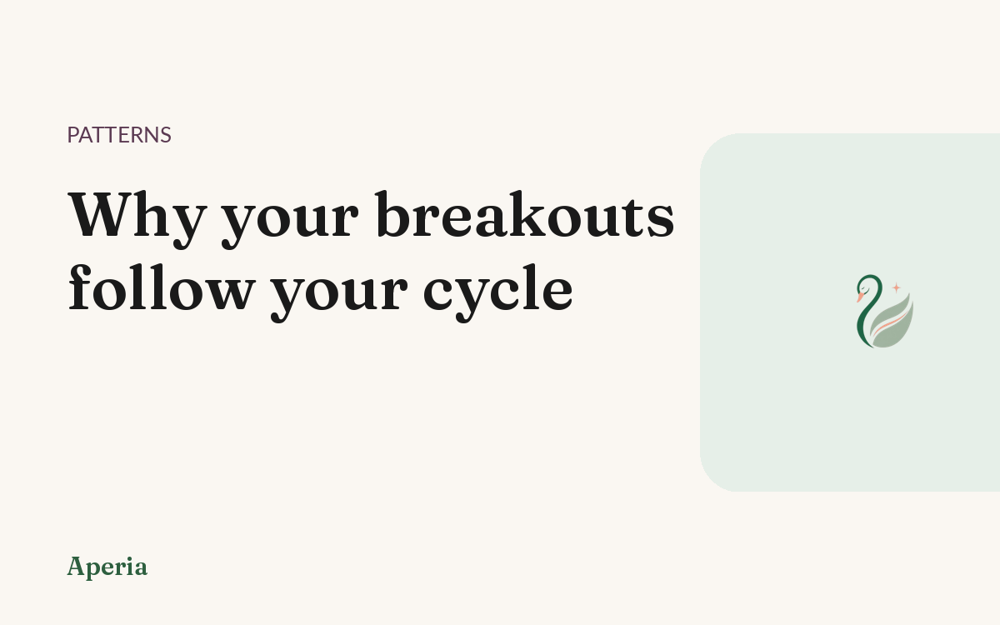
Patterns
Why your breakouts follow your cycle
The same week, the same spots. What that rhythm is telling you — and how to read it.
Read →Hormone-aware skin intelligence
Aperia scans your skin, learns your patterns, and finally shows you why you break out. Free to start.
Free to start · no card required
The €12 cleanser. The €40 serum. The viral one everyone swore by. Each worked for a week, then quit. You were never given the one thing that matters: an explanation.
Your breakouts follow a pattern. Aperia shows you the pattern.
A quick face scan gives you a skin score, broken down by zone.
Your cycle, food, sleep and stress — in seconds a day.
Aperia connects the dots and shows you why your skin does what it does.
A monthly skin-journey report and a before/after you can actually see.
Everything it does
Aperia doesn't just scan your face. It watches your skin, your cycle and your habits together — and turns all of it into an answer. Scroll, and watch it turn.
Point your camera and Aperia reads your skin in seconds — forehead, cheeks, nose, chin — and gives each area a clear score. No more staring in the mirror guessing. You get a real baseline you can actually track.
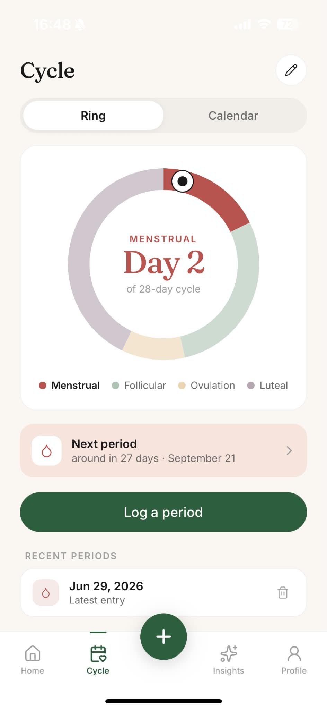
See where you are in your cycle and how your skin moves with it. The flare that shows up the same week every month finally has a name — a pattern, not bad luck, and not your fault.
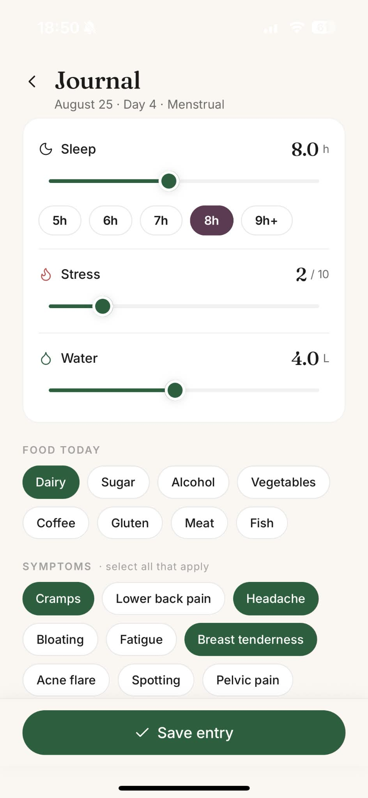
A few taps capture how you slept, what you ate, your stress and your mood. These are the hidden inputs behind your skin — and Aperia remembers them for you, so the pattern can actually surface.
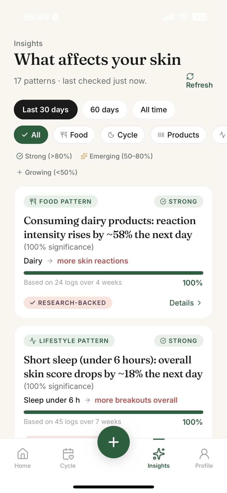
Aperia connects the dots between your habits, your cycle and your skin, then explains it in plain language you can act on. Not another dashboard to decode — a real answer to the question you've been asking for years.
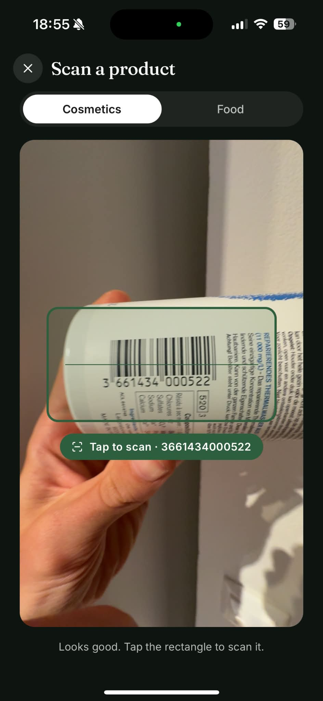
Point Aperia at a product or its ingredient list and it tells you what's likely to suit your skin and what might not. Stop pouring money into the next viral bottle and start choosing with a reason.
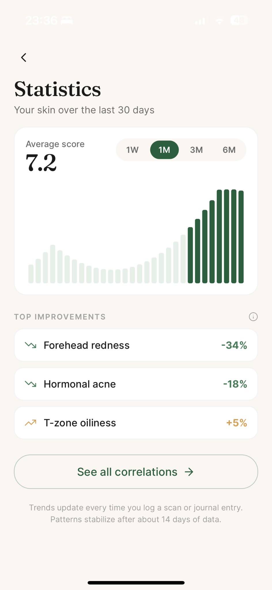
Your score, your zones and your patterns plotted across weeks and months. Real, visible progress — not a feeling you're trying to talk yourself into on a good-light day.
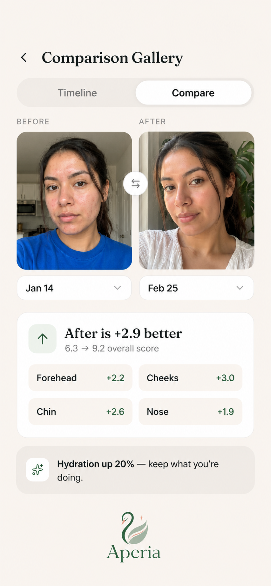
Line up any two scans side by side and see exactly what changed, zone by zone, with the score to back it up. Your proof, in your own skin — and the most shareable moment in the app.
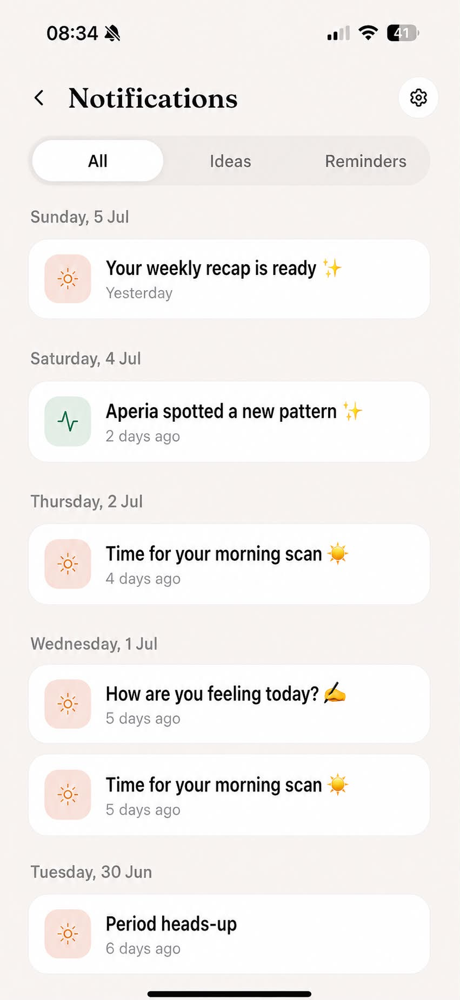
A quiet reminder to scan, a heads-up before your usual flare week, a note when there's a fresh insight — each timed to your own rhythm, in your language, and fully in your control.
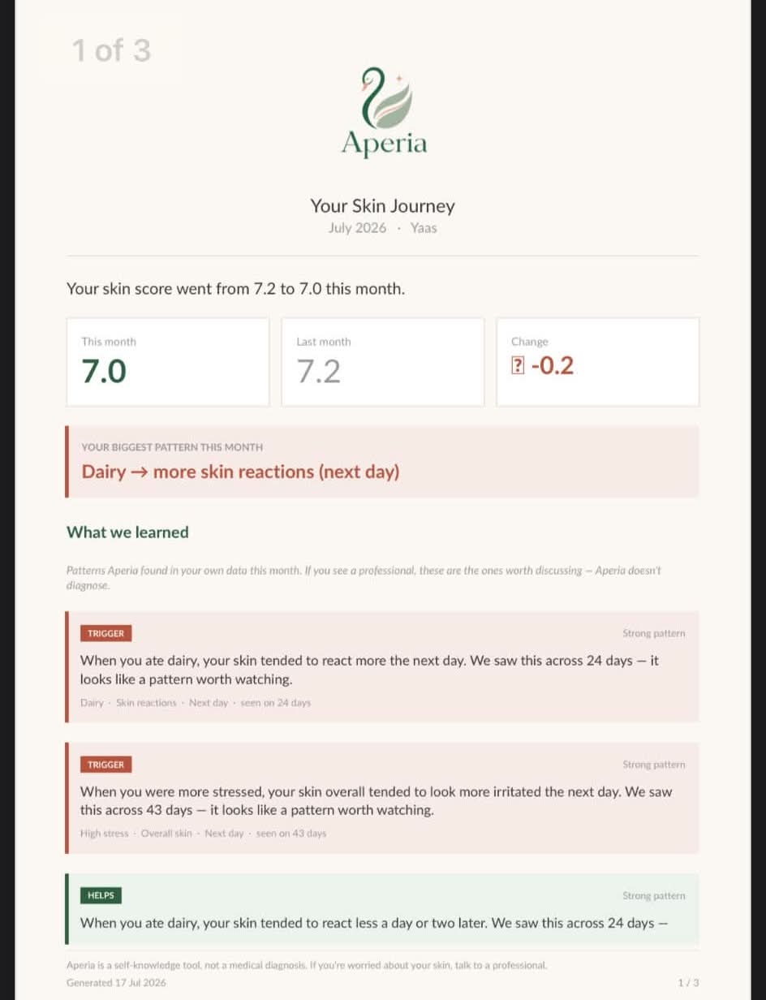
Aperia pulls it all together into a calm, beautiful report — what changed, what it learned about your skin, and what's worth trying next. The whole journey in one place you'll actually want to open.
Your hormones move in a rhythm, and for a lot of people skin moves with them. The same spots. The same week. Month after month. It isn't bad luck and it isn't a lack of discipline — it's a pattern that nobody ever showed you.
Once you can see the rhythm, everything gets calmer. You stop reacting to every new product and start noticing what your own skin actually responds to: where you are in your cycle, how you slept, how much stress the week held, what you ate.
Aperia's whole job is to make that visible. It doesn't promise to fix you. It shows you why.
"For the first time, something explained my skin instead of just selling me another cream."
"I stopped guessing and started understanding. That changed everything."
"It wasn't my fault. I just needed to see the pattern."
Personal journeys
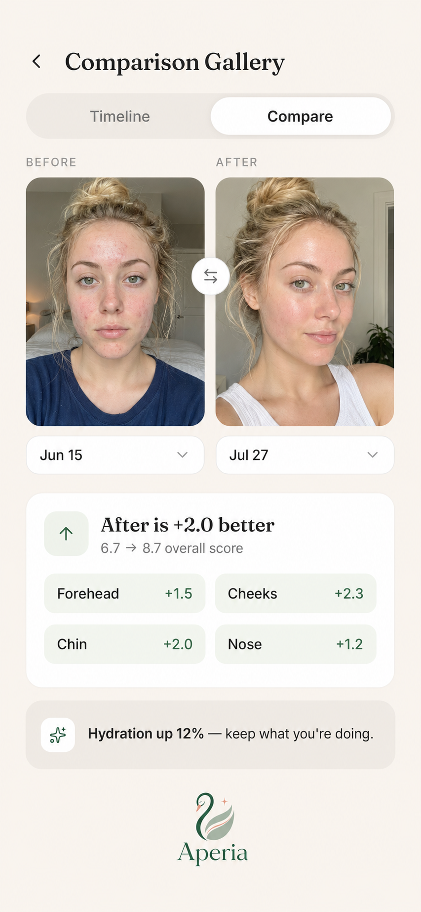
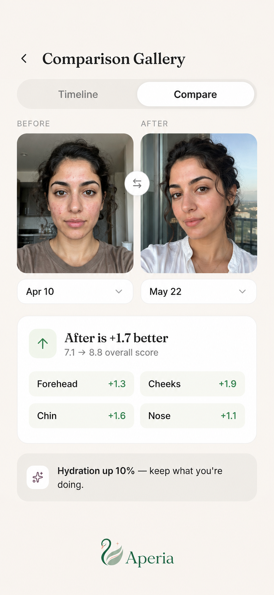
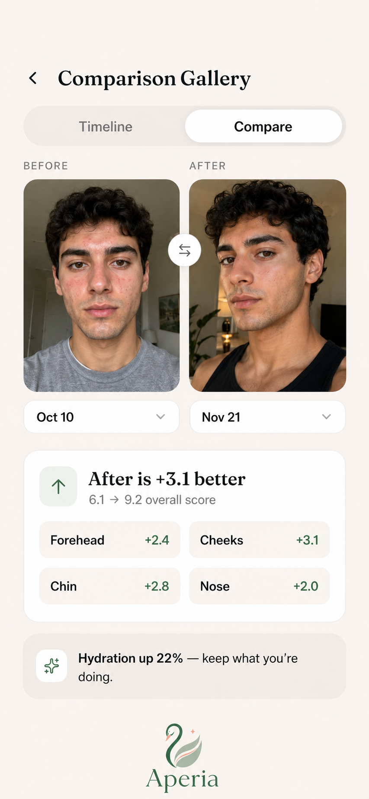
Individual experiences. Aperia helps you understand your skin; results vary.
Speaks your language
Every screen, every insight, every reminder — fully translated, not machine-guessed. Choose your language and the whole app follows.
Your photos are encrypted, never sold, and never shared. Private by design, GDPR-compliant.
Questions
For a lot of people, skin follows the hormonal cycle — the same week can bring the same flare, month after month. It isn't random, and it isn't your fault; it's a pattern. Aperia helps you see that pattern by tracking your skin alongside your cycle, so the flare finally has a name and a week attached to it.
Most of what your skin does day to day comes down to a few inputs: your cycle, your sleep, your stress and your food. Aperia logs these in seconds a day and connects them to your skin, so the patterns surface on their own — you stop guessing and start understanding what your own skin actually responds to.
Aperia is a hormone-aware skincare intelligence app for iPhone. It scans your skin and gives you a score by zone, tracks your cycle, sleep, stress and food, and shows you the patterns behind your breakouts in plain language. Aperia is a self-knowledge tool that helps you understand your skin — not a medical service.
Yes. Breakouts aren't only a women's issue — plenty of men deal with them too. Aperia works for anyone who wants to understand their skin, and it tailors the experience to you during setup.
Yes — Aperia is free to start. There's an optional premium plan for deeper insights and your monthly skin-journey report, but you can begin and get real value without paying.
Your photos are encrypted, never sold and never shared with third parties. Aperia is private by design and GDPR-compliant — your skin data is yours.
Most apps sell you the next product. Aperia explains your skin instead — it connects your habits and your cycle to what your skin actually does, so you finally understand why you break out, rather than guessing your way through another routine.

The same week, the same spots. What that rhythm is telling you — and how to read it.
Read →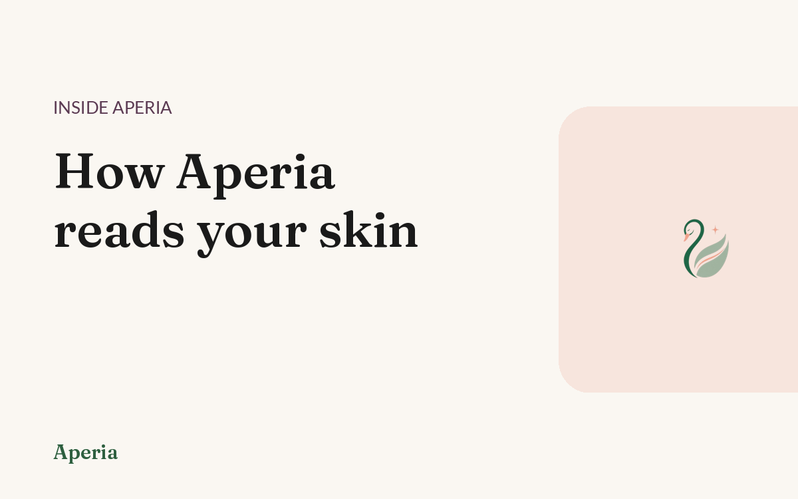
What a zone-by-zone skin score actually measures, and why it changes day to day.
Read →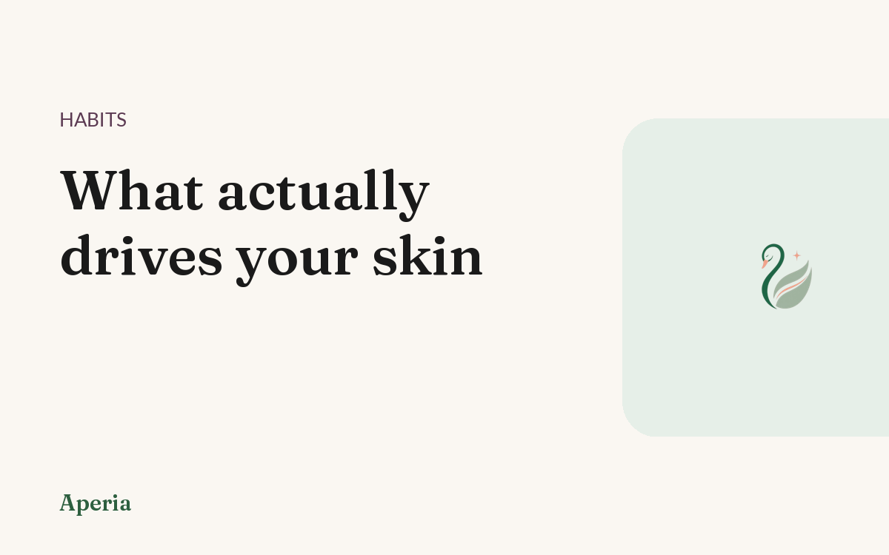
Sleep, stress, food, cycle. Four inputs, tracked in seconds, that explain most of it.
Read →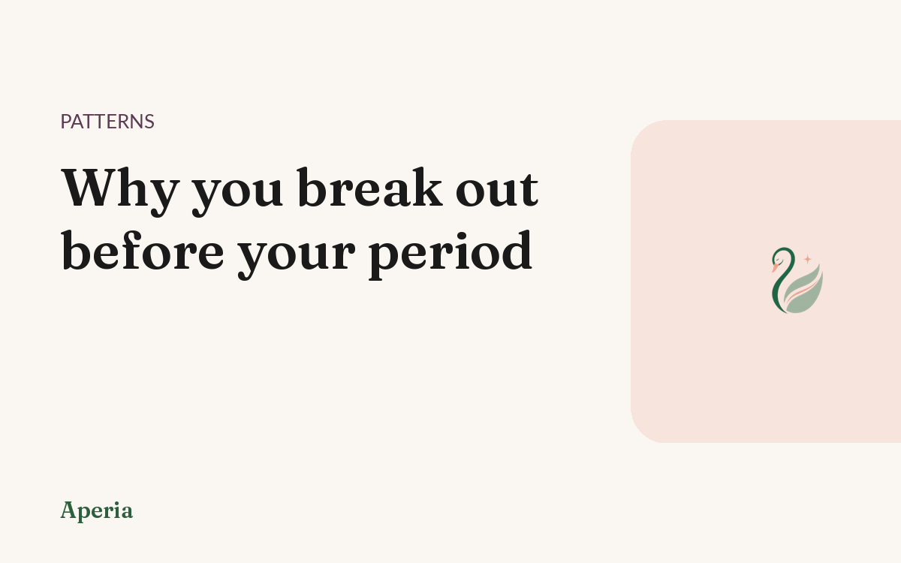
Same week, same spots, every month. What that premenstrual flare is telling you.
Read →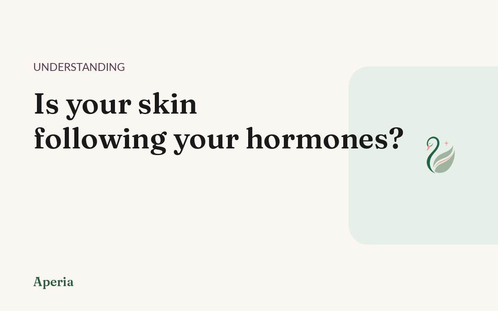
The everyday signs your skin follows your cycle — and how to find out for sure.
Read →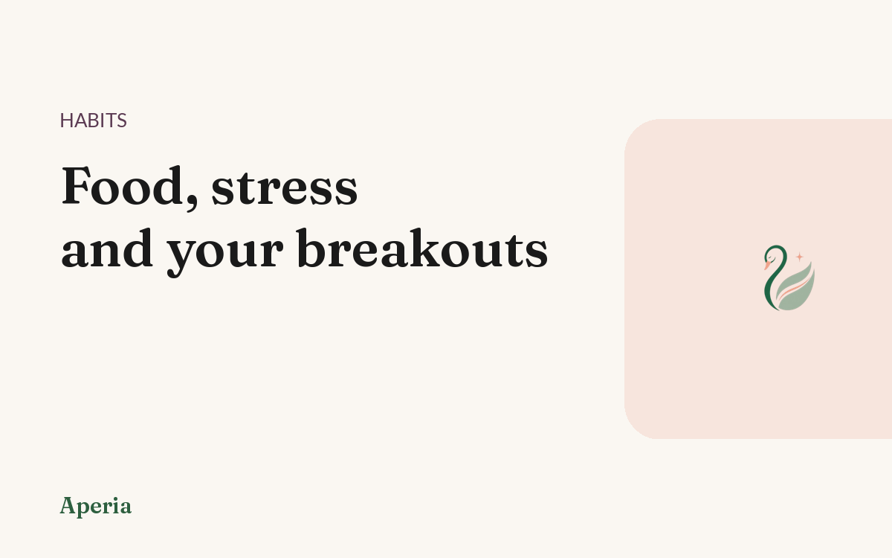
It depends on you. How to find your own triggers instead of guessing from a list.
Read →